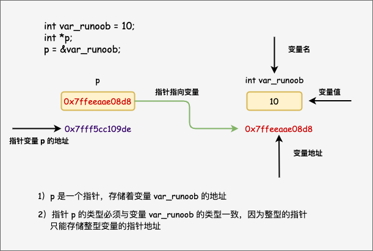

C Pointer
Learning pointers in C is both simple and interesting. Through pointers, you can simplify the execution of some C programming tasks, and some tasks, such as dynamic memory allocation, cannot be performed without pointers. Therefore, to become a good C programmer, it is necessary to learn pointers.
As you know, every variable has a memory location, and every memory location defines a usable&address accessed by the operator, which represents an address in memory.
Please look at the following example, which will output the address of the defined variable:
Example
When the above code is compiled and executed, it will produce the following results:
var_runoob 变量的地址： 0x7ffeeaae08d8

Through the above example, we understand what a memory address is and how to access it. Next, let's look at what a pointer is.
What is a pointer?
A pointer is a memory address, and a pointer variable is a variable used to store memory addresses. Like other variables or constants, you must declare a pointer before using it to store the address of another variable. The general form of a pointer variable declaration is:
type *var_name;
Here,typeis the base type of the pointer, which must be a valid C data type,var_nameis the name of the pointer variable. The asterisk used to declare a pointer*is the same as the asterisk used in multiplication. However, in this statement, the asterisk is used to specify that a variable is a pointer. The following are valid pointer declarations:
For all actual data types, whether integer, floating-point, character, or other data types, the type of the value of the corresponding pointer is the same: it is a long hexadecimal number representing a memory address.
The only difference between pointers of different data types is the data type of the variable or constant that the pointer points to.
How to use pointers?
When using pointers, the following operations are frequently performed: defining a pointer variable, assigning the address of a variable to the pointer, and accessing the value at the available address in the pointer variable. These are done using the unary operator*to return the value of the variable located at the address specified by the operand. The following example involves these operations:
Example
When the above code is compiled and executed, it will produce the following results:
var 变量的地址: 0x7ffeeef168d8 ip 变量存储的地址: 0x7ffeeef168d8 *ip 变量的值: 20
NULL pointers in C
When declaring a variable, if there is no exact address to assign, assigning a NULL value to the pointer variable is a good programming practice. A pointer assigned a NULL value is called aEmptypointer.
NULL pointer is a constant with a value of zero defined in the standard library. Consider the following program:
Example
When the above code is compiled and executed, it will produce the following results:
ptr 的地址是 0x0
On most operating systems, programs are not allowed to access memory at address 0 because that memory is reserved by the operating system. However, memory address 0 has special significance: it indicates that the pointer does not point to an accessible memory location. But by convention, if a pointer contains a null value (zero), it is assumed to point to nothing.
To check for a null pointer, you can use an if statement, as shown below:
Detailed explanation of C pointers
In C, there are many pointer-related concepts. These concepts are all simple, but they are all important. The following lists some important pointer-related concepts that C programmers must be clear about:
| Concepts | Description |
|---|---|
| Pointer Arithmetic | Four arithmetic operations can be performed on pointers: ++, --, +, - |
| Array of Pointers | You can define an array used to store pointers. |
| Pointer to pointer | C allows pointers to pointers. |
| Passing Pointers to Functions | Passing parameters by reference or address enables the passed parameters to be modified in the called function. |
| Returning Pointer from Functions | C allows functions to return pointers to local variables, static variables, and dynamically allocated memory. |